처음 시작하기
설치하고 처음 물건을 등록하기까지 1분이면 돼요.
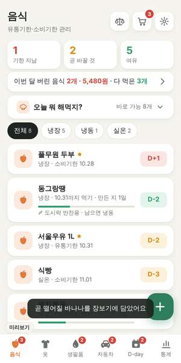
시작 순서
- 다운로드 페이지에서 앱을 설치해요.
- 아래 탭에서 음식 · 옷 · 생필품 · 자동차 · D-day 중 하나를 고르고 오른쪽 아래 + 버튼을 눌러요.
- 안 쓰는 탭은 설정 → 쓸 탭 고르기에서 꺼 두면 화면이 간단해져요.
- 처음 등록할 때 알림 허용 창이 뜨면 허용을 눌러요. 그래야 아침 알림이 와요.
화면 보는 법
- 위쪽 숫자 3칸 · 기한 지남(빨강) · 곧 바꿀 것(노랑) · 여유(초록). 누르면 그것만 모아 봐요.
- D-3 / D+2 · 기한까지 3일 남음 / 2일 지남. 자동차는 1,000km처럼 남은 거리로도 보여요.
- 막대 · 교체 주기가 얼마나 지났는지. 꽉 찰수록 바꿀 때가 가까워요.
- 오른쪽 위 ⚖ · 🛒 · ⚙ · 가격 비교, 장보기 목록, 설정이에요.
- 왼쪽 아래 v1.N · 지금 버전. "최신"이면 그대로, "새 버전 있음"이면 눌러서 업데이트해요.
- 아래 탭의 빨간 숫자 · 그 탭에서 오늘 챙길 물건 수예요.
음식 탭
냉장고 속 음식의 유통기한·소비기한을 챙겨요. 버리기 전에 먹을 수 있게 도와줘요.
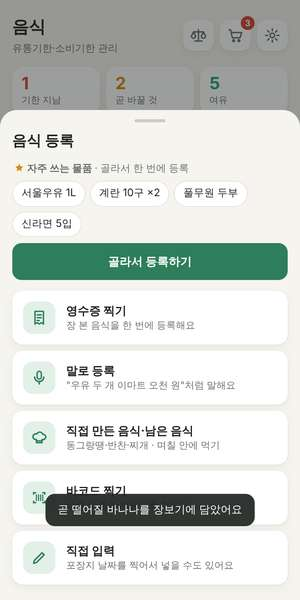
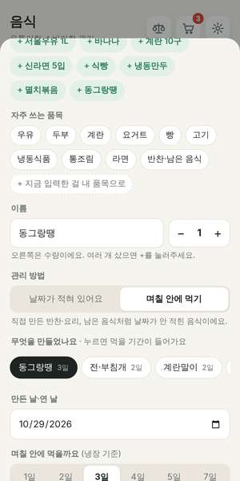
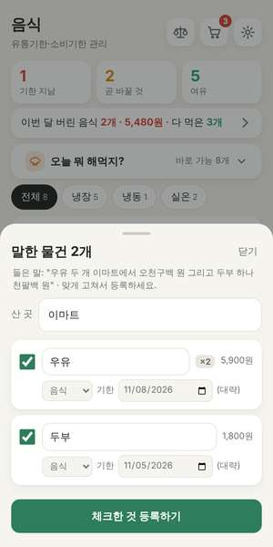
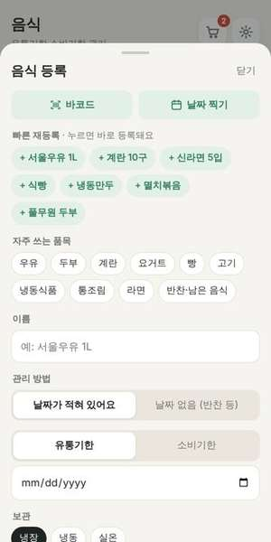
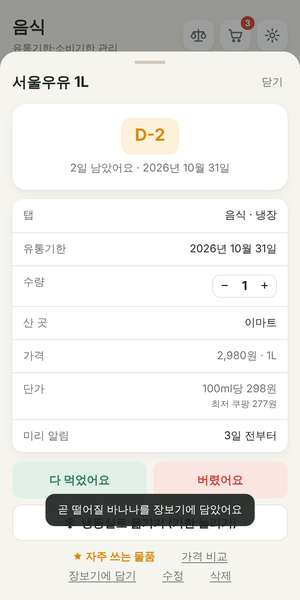
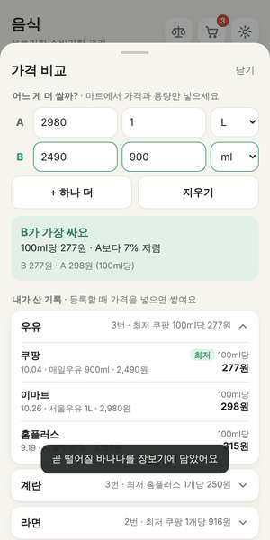
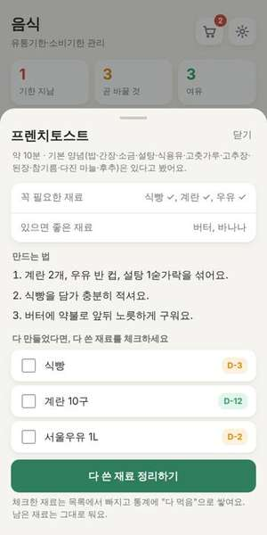
등록하는 4가지 방법
- 영수증 찍기 · 장 본 영수증을 찍으면 산 음식이 한 번에 목록으로 나와요. 체크한 것만 등록돼요. 기한은 품목별 대략값이라 포장지 날짜와 다르면 고쳐주세요.
- 바코드 찍기 · 상품 바코드로 이름을 채워요. 이름이 안 나오는 상품은 한 번만 적어두면 다음부터 자동이에요.
- 날짜 찍기 · 등록 화면에서 포장지의 유통기한 부분을 찍으면 날짜를 읽어 넣어요.
- 말로 등록 · "우유 두 개 이마트에서 오천 원 그리고 두부 하나"처럼 말하면 이름·수량·가게·가격이 채워져요. 여러 개를 말하면 목록으로 나와요. 폰의 음성 인식 화면을 빌려 써서 챙김이는 마이크 권한이 없어요.
- 직접 입력 · 빠른 재등록 · 자주 쓰는 품목(우유, 두부…)을 누르거나, 전에 등록한 물건은 "+ 서울우유"처럼 한 번에 다시 등록해요.
- ★ 자주 쓰는 물품 · 물건을 누르고 "자주 쓰는 물품에 넣기"를 하면, + 버튼에서 여러 개를 골라 한 번에 등록할 수 있어요. 장 본 날 우유·계란·두부를 버튼 두 번으로 끝내요.
직접 만든 음식 · 며칠 안에 먹기
- + → 직접 만든 음식·남은 음식을 누르고 동그랑땡·전·국·찌개·볶음 반찬 같은 걸 고르면 냉장 며칠 안에 먹을지가 들어가요. 예: 동그랑땡 3일(냉동하면 약 1개월), 국·찌개 2일, 멸치볶음 7일.
- "며칠 안에 먹을까요"의 1·2·3·4·5·7일 버튼으로 바로 바꿀 수 있어요.
- 레시피를 보고 만들었으면 레시피 화면의 남은 ○○ 냉장고에 넣기로 한 번에 등록돼요.
- 대략적인 기준이에요. 냄새·색·상태를 꼭 확인해 주세요.
수량 · 산 곳 · 어디가 더 쌀까
- 수량 · 이름 옆 − 2 +로 개수를 넣어요. 여러 개면 "1개 먹었어요"를 누를 때마다 하나씩 줄어요.
- 가격·구매처(선택) · 등록 화면 아래를 펼쳐 낸 돈과 산 곳을 넣어요. 영수증으로 등록하면 가게 이름과 가격이 자동으로 들어가요.
- 용량은 자동 · 이름에 "1L, 600g, 10구, 5입"처럼 적혀 있으면 용량을 알아서 읽어요. 그래서 100ml당 · 100g당 · 1개당 가격이 바로 나와요.
- 등록할 때 "지난번 쿠팡에서 7% 더 싸게 샀었어요"처럼 바로 알려주고, 물건 자세히 보기에 최저가 가게가 보여요.
- ⚖ 가격 비교 · 마트에서 두 상품의 가격과 용량만 넣으면 어느 게 몇 % 싼지 계산해요. 아래에는 내가 산 기록이 품목별·가게별로 정리돼 있어요.
다 먹었을 때 · 버릴 때
- 음식을 누르고 다 먹었어요 또는 버렸어요를 눌러요. 목록에서 빠지고 통계에 쌓여요.
- 가격을 넣어두면 버렸을 때 "이번 달 5,480원어치 버렸어요"처럼 금액으로 보여요.
- 냉동실로 옮기기 · 곧 상할 음식을 얼리면 기한을 늘려줘요(고기 약 3개월, 빵 약 1개월). 우유·두부처럼 얼리면 맛이 변하는 건 미리 알려줘요.
- 보관 위치(냉장 · 냉동 · 실온) 버튼으로 나눠 볼 수 있어요.
오늘 뭐 해먹지?
- 평소에는 한 줄로 접혀 있어요. 궁금할 때 눌러서 펼치고, 다시 누르면 접혀요.
- 가진 음식으로 만들 수 있는 요리를 41가지 레시피 중에서 골라줘요. 기한이 급한 재료를 쓰는 요리가 먼저 나와요.
- 요리를 누르면 재료와 만드는 법이 나와요. 모자란 재료는 장보기에 담기로 바로 담아요.
- 다 만든 뒤 다 쓴 재료를 체크하면 목록에서 정리돼요.
- 간장·소금·고추장 같은 기본 양념은 있다고 보고 골라요.
옷 탭
속옷·양말·신발처럼 낡는 걸 잘 모르는 옷의 교체 시기를 챙겨요.
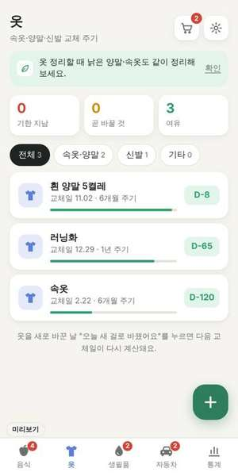
쓰는 법
- +를 누르고 품목(속옷, 양말, 브래지어, 운동화, 잠옷, 슬리퍼, 깔창)을 고르면 기본 주기가 들어가요. 예: 속옷·양말 6개월, 운동화 1년.
- 사용 시작일을 넣으면 다음 교체일이 계산돼요.
- 새 걸로 바꾼 날 물건을 누르고 오늘 새 걸로 바꿨어요를 누르면 다음 교체일이 다시 계산돼요.
- 속옷·양말 · 신발 · 기타로 나눠 볼 수 있어요.
생필품 탭
칫솔·수세미·수건·필터처럼 매일 쓰는 소모품을 쓰는 곳별로 챙겨요.
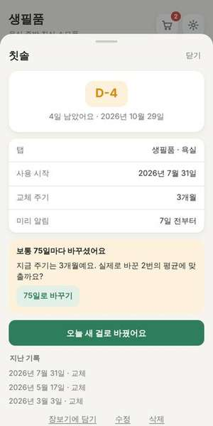
쓰는 법
- 약·구급 · 해열진통제·소화제·감기약·연고·밴드의 유통기한을 챙겨요. 집에 있는 상비약 확인할 때 좋아요.
- 욕실(칫솔 3개월, 치약, 수건, 면도날, 샤워볼) · 주방(수세미 1개월, 행주, 도마, 정수기 필터) · 침실(베개·이불 커버, 베개) · 기타(공기청정기 필터)로 나눠 봐요.
- 바코드·영수증으로도 등록할 수 있어요.
- 바꾼 날 오늘 새 걸로 바꿨어요를 누르면 통계에 쌓이고 다음 날짜가 계산돼요.
- 내 주기 학습 · 실제로 바꾼 기록이 쌓이면 "보통 75일마다 바꾸셨어요"처럼 내 생활에 맞는 주기를 제안해요. 버튼 하나로 바꿀 수 있어요.
자동차 탭
엔진오일·필터·타이어를 주행거리(km)와 기간 중 먼저 오는 쪽으로 챙겨요.
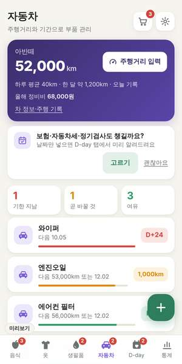
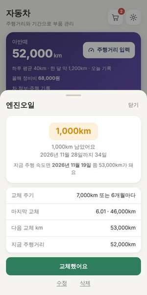
처음 설정
- 내 차 등록을 누르고 차 이름과 계기판 주행거리를 넣어요.
- 관리할 부품을 고르고 마지막으로 바꾼 날짜와 km를 넣어요. 모르면 그대로 두면 오늘부터 계산해요.
- 가끔 주행거리 입력으로 계기판 숫자를 넣어주세요. 2주 이상 쌓이면 "11월 19일쯤 교체"처럼 날짜도 예상해요.
교체할 때
- 부품을 누르고 교체했어요를 눌러 날짜·km와 정비 비용·정비소를 적어요. 차 카드에 올해 정비비 합계가 보여요.
- 기본 주기는 일반적인 권장값이에요(엔진오일 7,000km 또는 6개월 등). 수정에서 차량 설명서에 맞게 바꿔주세요.
- 주행거리를 한 달 넘게 안 넣으면 아침 알림으로 알려줘요.
- 보험·자동차세·정기검사 · 차를 등록하면 위쪽에 "챙길까요?" 카드가 떠요. 고르기를 누르고 날짜만 확인하면 D-day 탭에서 미리 알려줘요.
D-day 탭 (구독 · 약정 · 기념일)
매달 나가는 돈과 놓치면 아까운 날짜를 D-day와 금액으로 챙겨요.
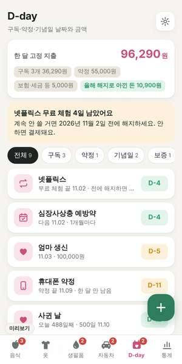
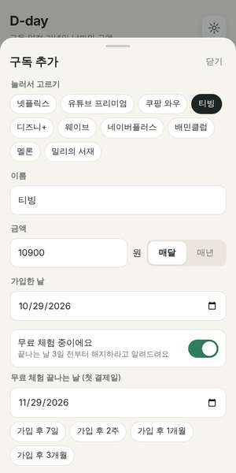
구독
- + → 구독 추가에서 넷플릭스·유튜브 프리미엄·쿠팡 와우 같은 이름을 누르고 금액만 넣으면 끝이에요.
- 무료 체험 중이에요를 켜면 끝나는 날(가입 후 1개월)이 자동으로 들어가요. 끝나기 3일 전부터 "지금 해지하세요"라고 알려줘요.
- 결제일은 매달 저절로 다음 달로 넘어가요. 결제 알림은 하루 전·3일 전·안 받기 중에 골라요.
- 해지했으면 해지했어요를 눌러요. 목록에서 빠지고 "한 달 13,500원 아꼈어요"처럼 아낀 돈이 쌓여요.
보증기간 · 반복 점검
- 보증기간 · 냉장고·세탁기 같은 가전을 산 날과 보증기간(1년 등)을 넣고 영수증·보증서 사진을 같이 저장해요. 고장 나면 이 화면을 서비스센터에 보여주세요.
- 반복 점검·납부 · 자동차(보험 갱신, 자동차세 6월·12월, 정기검사) · 집 관리(에어컨 청소, 보일러 점검, 화재경보기 배터리 등) · 반려동물(심장사상충 약, 구충제, 예방접종) 중에서 누르면 다음 날짜가 들어가요.
- 했으면 했어요를 눌러요. 다음 날짜로 넘어가고 기록이 남아요. 보험료·세금을 적어두면 한 달 고정 지출에 같이 계산돼요.
약정 · 기념일
- 약정 · 휴대폰·인터넷 약정 시작일과 기간(24개월 등)을 넣으면 끝나는 날과 남은 개월이 보여요. 한 달 전부터 "요금제를 점검해 보세요"라고 알려줘요.
- 기념일 · 생일·결혼기념일처럼 매년 돌아오는 날과 준비할 금액(선물 예산, 용돈, 축의금)을 함께 적어요.
- 날짜 세기를 켜면 "오늘 488일째", 다음 100일 단위 날과 주년을 알려줘요.
- 맨 위에는 구독과 약정을 합친 한 달 고정 지출이 보여요.
통계 탭
한 달 동안 버린 음식, 다 먹은 음식, 교체한 물건을 모아 봐요.
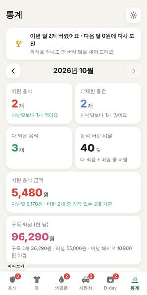
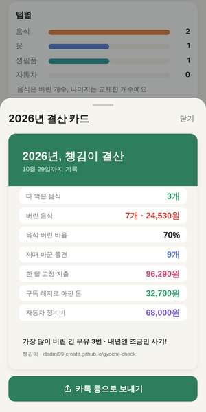
볼 수 있는 것
- 버린 음식 · 교체한 물건 · 다 먹은 음식 개수와 지난달 비교
- 음식 버린 비율 · 다 먹은 것 + 버린 것 중 버린 것의 비율
- 버린 음식 금액, 자동차 정비비, 구독·약정 한 달 지출과 해지로 아낀 돈
- 음식 0원 도전 · 음식을 하나도 안 버린 달을 "연속 3개월 성공"처럼 세어 줘요. 달이 바뀌면 성공을 알려줘요.
- 1년 결산 카드 · 통계 아래 버튼을 누르면 올해 다 먹은 음식, 버린 금액, 아낀 돈을 그림 한 장으로 만들어 카톡으로 보낼 수 있어요.
- 최근 6개월 그래프, 탭별 개수, 자주 버린 음식, 그 달의 기록 목록
- 위쪽 화살표로 지난달도 볼 수 있어요.
어느 탭에서나 쓰는 기능
알림, 장보기, 사진, 위젯처럼 모든 탭에서 같이 쓰는 기능이에요.
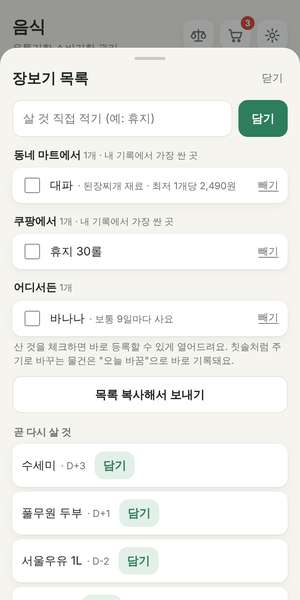
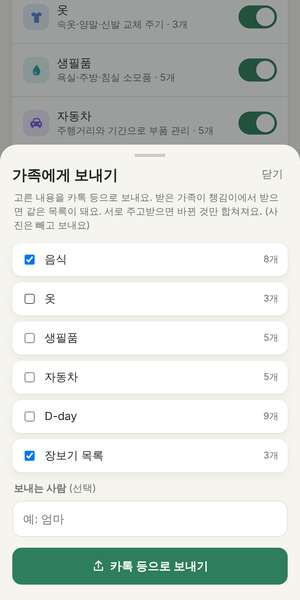
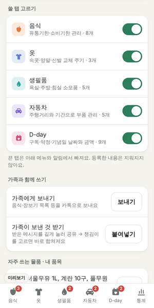
알림 · 위젯
- 알림에서 바로 처리 · 알림 아래 버튼으로 "우유 다 먹음", "장보기에 담기", "3시간 뒤 다시"를 바로 눌러요. 앱을 열면 기록에 반영돼요. 홈 화면 위젯에도 같은 버튼이 있어요.
- 아침 알림 · 정한 시각(기본 9시)에 챙길 물건이 있는 날만 한 번 묶어서 와요. 곧 상할 음식이 있으면 "두부조림 어때요?" 같은 요리도 알려줘요.
- 계절 알림 · 장마 전 와이퍼, 환절기 이불 세탁, 겨울 전 배터리 점검 같은 때맞춤 안내가 탭 위쪽과 알림으로 와요.
- 홈 화면 위젯 · 바탕화면을 길게 누르고 위젯에서 챙김이를 고르면 앱을 열지 않아도 오늘 챙길 물건이 보여요.
- 설정 → 알림 시각에서 시간을 바꾸고, 알림 미리보기로 바로 확인할 수 있어요.
메모 · 내 품목
- 메모 · 등록·수정 화면 아래에 "냉장고 둘째 칸", "엄마가 보내준 것", "해지는 앱 설정에서"처럼 적어두면 목록과 자세히 보기에 보여요.
- 내 품목 · 등록 화면의 + 지금 입력한 걸 내 품목으로를 누르면 ★ 표시와 함께 "자주 쓰는 품목"에 들어가요. 설정 → 자주 쓰는 물품 · 내 품목 → 직접 추가로도 만들 수 있어요.
가족과 함께 쓰기
- 설정 → 가족에게 보내기에서 음식·장보기 목록 등 보낼 것을 고르고 카톡으로 보내요.
- 받은 가족은 그 메시지를 길게 눌러 공유 → 챙김이를 고르면 "합칠까요?"가 떠요. 합치기를 누르면 같은 목록이 돼요.
- 서로 주고받으면 바뀐 것만 맞춰져요. 같은 물건은 더 나중에 고친 쪽으로, 지운 물건은 지운 걸로 합쳐요. 사진은 보내지 않아요.
- 서버 없이 카톡으로 주고받는 방식이라, 바뀔 때마다 저절로 맞춰지지는 않아요. 장 보기 전이나 정리한 뒤에 한 번씩 보내 주세요.
장보기 · 사진 · 수정
- 다 떨어질 날 예측 · 같은 물건을 몇 번 사면 "보통 10일마다 사요"를 알아내서, 떨어지기 전에 장보기에 저절로 담아요.
- 🛒 장보기 목록 · 내 가격 기록에서 가장 싸게 산 가게별로 묶어 보여줘요. 바꿀 때 된 물건과 요리에 모자란 재료를 담아요. 산 것을 체크하면 바로 등록 화면이 열려요. 목록 복사로 카톡에 보낼 수 있어요.
- 사진 · 등록·수정 화면에서 사진을 넣으면 목록 아이콘 자리에 사진이 떠요. 누르면 크게 보여요.
- 수정하기 · 물건을 누르고 수정을 누르면 이름·날짜·주기를 바꾸거나 다른 탭(음식 · 옷 · 생필품 · 자동차)으로 옮길 수 있어요.
설정
- 쓸 탭 고르기 · 필요한 탭만 켜요. 끈 탭은 아래 메뉴와 알림에서 빠지고, 등록한 내용은 그대로 남아요.
- 자주 쓰는 물품 관리 · 자주 사는 물건을 고르거나 빼요. 많이 산 순서로 추천도 해줘요.
- 테마 · 자동 · 밝게 · 어둡게(다크 모드)
- 백업 복사 / 붙여넣기 · 폰을 바꿀 때 내용을 글자로 복사해 카톡 나와의 채팅 등에 보관했다가 새 폰에서 붙여넣어요. 사진은 포함되지 않아요.
자주 묻는 질문
영수증·바코드 인식이 처음에 안 돼요
앱 용량을 줄이려고 글자·바코드 인식 기능은 폰의 Google Play 서비스에서 처음 한 번 내려받아요. 설치 후 와이파이에 연결된 상태로 1~2분 기다린 뒤 다시 해 보세요.
알림이 안 와요
폰 설정 → 애플리케이션 → 챙김이 → 알림이 켜져 있는지 확인해 주세요. 배터리 절약 모드에서 앱이 "절전"으로 되어 있으면 알림이 늦을 수 있어요. 앱 설정의 알림 미리보기로 바로 시험할 수 있어요.
바코드로 상품 이름이 안 나와요
공개 상품 정보에 없는 국내 상품이 많아요. 이름을 한 번 적어 등록하면 같은 바코드는 다음부터 자동으로 채워져요.
영수증을 잘 못 읽어요
밝은 곳에서 영수증을 평평하게 펴고, 품목 부분이 화면을 꽉 채우게 가까이 찍어주세요. 구겨지거나 흐린 영수증은 틀리게 읽을 수 있어서 등록 전에 한 번 확인해 주세요.
가족 공유하면 내 정보가 어디에 저장되나요?
챙김이 서버는 없어요. 고른 목록을 글자로 만들어 카톡 같은 메신저로 보내는 것뿐이라, 보낸 메시지에만 남아요. 받는 쪽도 "합치기"를 눌러야만 들어가요.
내 정보가 어디로 가나요?
등록한 물건·사진·기록은 내 폰 안에만 저장돼요. 인터넷으로는 바코드 숫자(상품 이름 찾기)와 새 버전 확인만 해요. 광고나 추적도 없어요.
업데이트는 어떻게 하나요?
새 버전이 나오면 앱을 켤 때 "새 버전이 있어요" 창이 떠요. 왼쪽 아래 버전 표시를 눌러도 돼요. 받은 파일을 설치하면 저장한 내용은 그대로 남아요.
앱을 지우면 어떻게 되나요?
저장한 내용도 같이 지워져요. 지우기 전에 설정 → 백업 복사로 내용을 보관해 두세요.